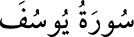

<a name=3551></a><br/>
<b>12-YÛSUF SÛRESİ</b><br/>
<i><b>Yusuf sûresi, 111 âyet olup, 1, 2 ve 3. âyetler Medine’de, diğerleri Mekke’de</b></i><br/>
<i><b>inmiştir. Sûrenin başından sonuna kadar Yusuf Peygamber’den bahsedildiği için</b></i><br/>
<i><b>bu adı almıştır.</b></i><br/>
